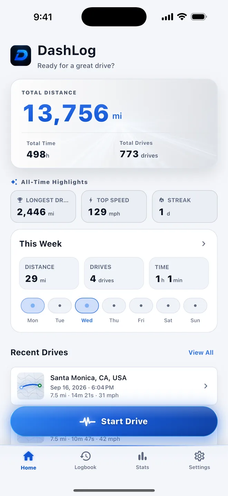
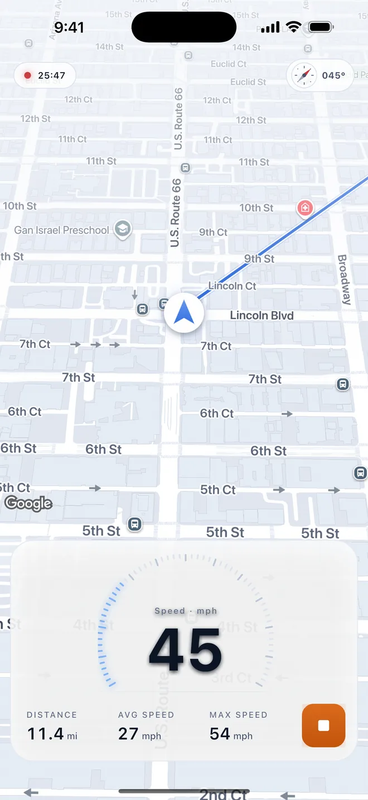
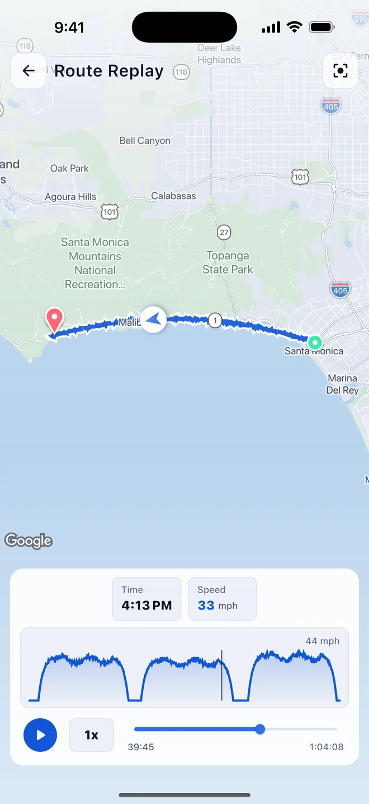
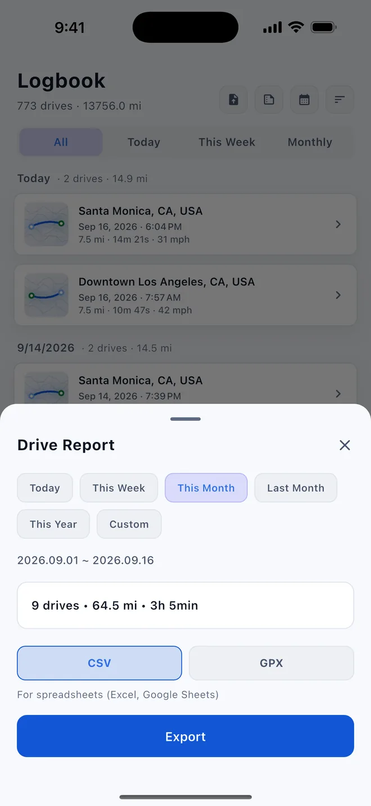
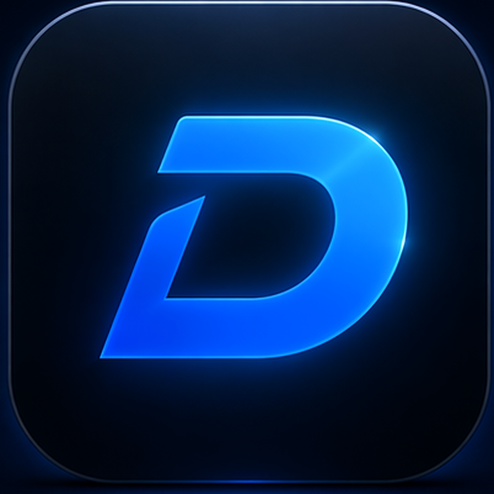

How to log every drive automatically in DashLog — 4 steps
The whole flow is set up once → just drive → replay → export. After the one-time setup, DashLog records on its own, so you never have to remember to hit Start. No account, records kept on your device.
Set it to record on its own
Do the one-time setup. On iPhone, add a Shortcuts automation that opens DashLog when your car connects; on Android, pair your car's Bluetooth once in the app. Set Location access to Always so it can record in the background.

Just drive
When your phone connects to CarPlay or the car's Bluetooth, recording starts by itself and stops when you disconnect — the live route, speed, and distance tick up as you go. No signal needed for logging, and you can always tap Start and Stop by hand.

Replay the route and read the stats
Every drive is saved with its route, distance, time, speed, and altitude. Replay the road on the map to see exactly where you went, and browse daily, weekly, monthly, and yearly totals in the stats.

Export GPX, CSV, or a period report
Export a single drive as GPX or CSV, or a whole period — today, this week, this month, or this year — as one report. You can also import GPX files from other apps to keep everything in one logbook.


DashLog — GPS Drive Tracker
A GPS drive tracker and mileage logbook that records your route, distance, speed, and stats automatically with CarPlay or your car's Bluetooth. Records stay on the device — no account, no subscription.
Why automatic, on-device logging matters
A drive log is only useful if it's complete — and the drives you forget to record are the ones you needed. DashLog solves that by starting on its own when the car connects, so every trip is captured without a thought. And because records are stored locally with no account, your detailed movement history isn't sitting in someone else's cloud.
Remember to start, then sync away
You have to tap record before every trip, and your routes are uploaded to an account on someone else's server.
Starts itself, stays on your phone
Recording begins when the car connects, and every drive is kept on the device — no account, no cloud sync.
What an automatic drive log is good for
Once every drive records itself, the logbook is yours to use:
- Mileage for work, taxes, or reimbursement — a complete record, nothing missed
- Road-trip memories — replay the exact route you took, months later
- Motorcycle and cycling rides, tracked the same automatic way
- GPX for other tools — export to mapping, fitness, or editing apps
One thing to set correctly: automatic recording needs Location access on Always, and the one-time CarPlay or Bluetooth trigger. After that, it runs without you.
Frequently asked questions
Does DashLog record drives automatically?
Yes, after a one-time setup. Recording starts when the phone connects to CarPlay or the car's Bluetooth and stops when it disconnects. On iPhone this is a Shortcuts automation; on Android the car's Bluetooth is paired once in the app. Location access must be set to Always. You can also start and stop a drive manually with one tap.
Does DashLog require an account?
No. DashLog does not require an account or sign-up, and drive records are stored locally on your device.
What does DashLog record for each drive?
The GPS route, distance, duration, speed, and altitude, plus daily, weekly, monthly, yearly, and all-time driving statistics.
Can I export my drives?
Yes. A single drive can be exported as GPX or CSV, or a whole period (today, this week, this month, last month, or this year) as one report. GPX files from other apps can also be imported.
Is DashLog free, and is it on iPhone and Android?
Yes. DashLog is free to download and use, with no subscription, and it is available on the Apple App Store for iPhone and Google Play for Android.
Let your next drive record itself.
After installing, the one-time setup takes a few minutes — then every drive logs on its own. If anything's unclear, you get answers straight from the person who built it.
grayforge.dev@gmail.com